|
|
| Candombe | Drumset | Guitar | Violin | |
|---|---|---|---|---|
| LH | 2.6 [2.2, 3.4] White Noise (92.9ms) |
2.7 [2.2, 3.6] White Noise (1s) |
2.6 [2.2, 3.9] White Noise (92.9ms) |
3.1 [2.3, 4.7] White Noise (1s) |
| SLOW | 31.5 [26.7, 46.4] White Noise (92.9ms) |
32.0 [27.4, 50.1] White Noise (1s) |
33.0 [28.2, 39.3] Dense Sinusoidal (92.9ms) |
31.6 [27.5, 36.9] White Noise (1s) |
| RAVE-REP | 126.5 [103.5, 196.2] White Noise (1s) |
127.4 [103.1, 185.5] White Noise (1s) |
128.5 [107.7, 162.5] Harmonic Signal (92.9ms) |
126.2 [104.2, 226.6] White Noise (1s) |
| RAVE-ADV | 126.4 [104.7, 149.1] White Noise (1s) |
131.1 [104.9, 162.5] White Noise (1s) |
133.8 [113.2, 162.5] Harmonic Signal (1s) |
127.5 [106.3, 153.7] White Noise (1s) |
We show examples of our latency hiding model reconstructing an audio input
by combining its fast and slow generators.
For illustrative purposes, we show a few excerpts extracted from the train set, as
RAVE-like autoencoders such as our slow generator do not generalize well to unseen
temporal structures like chords or fundamental frequencies, and can generate additional
transients in presence of such signals.
Candombe
| 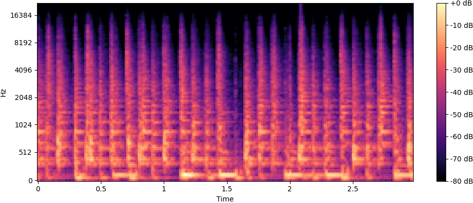 | 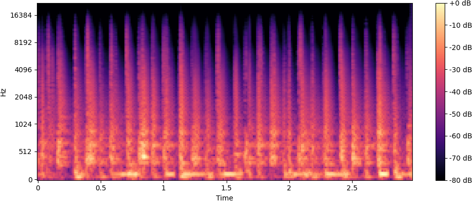 | 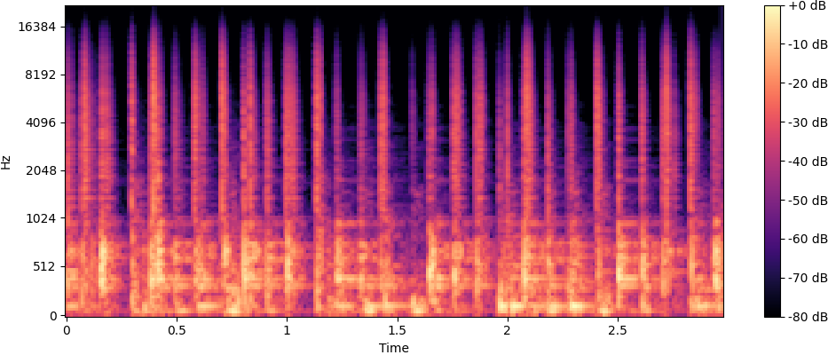 | 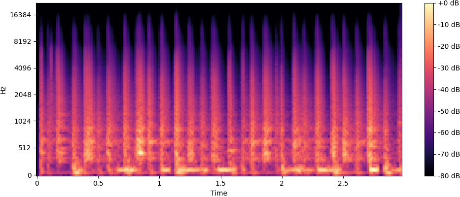 |
Drums
| 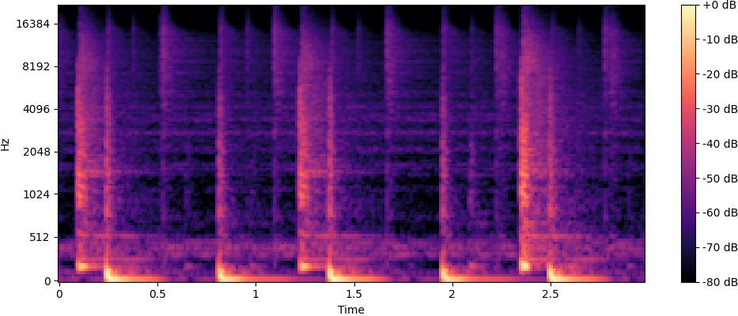 | 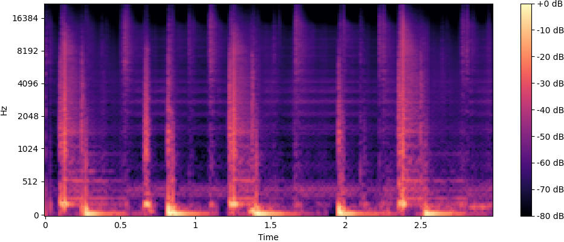 | 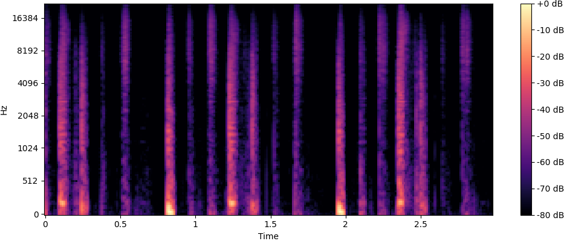 | 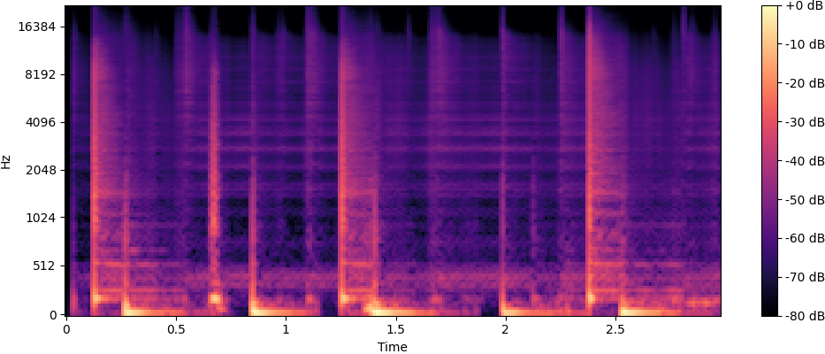 |
Guitar
| 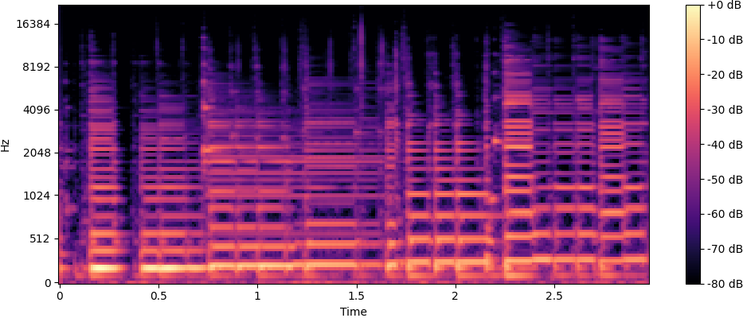 | 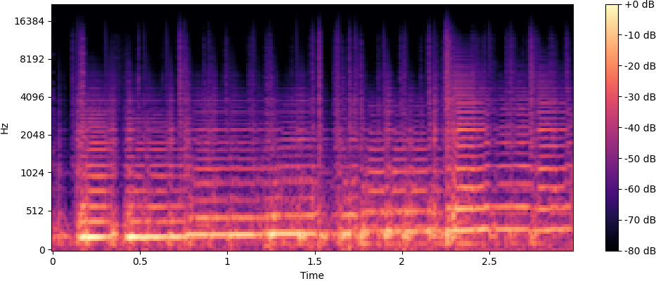 | 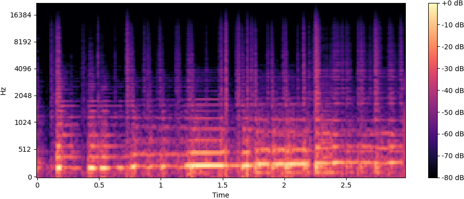 | 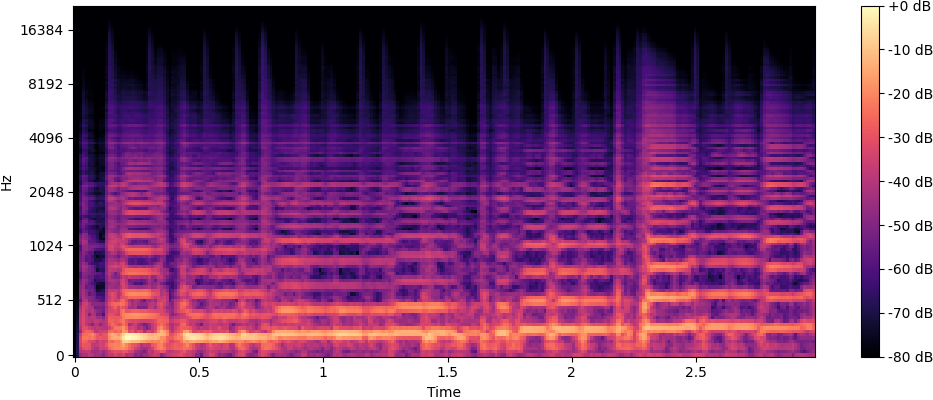 |
Violin
| 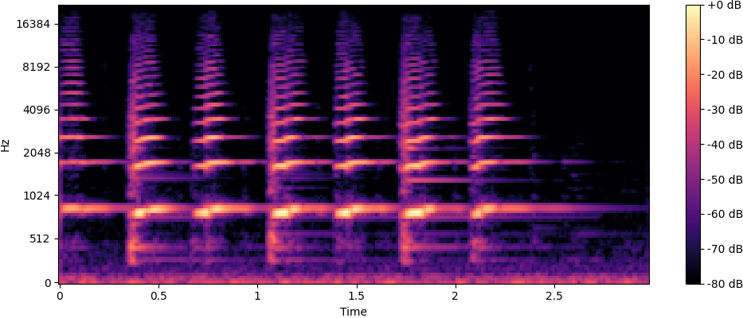 | 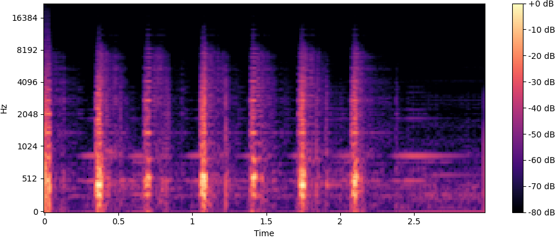 | 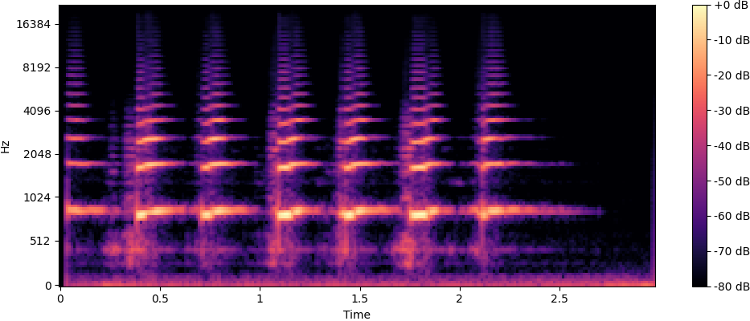 |
We analyze the spectral reconstruction capabilities of our model and compare with an ablated version (SLOW)
without the fast generator, that learns to reconstruct the full spectrogram, and RAVE trained on the
Representation Learning objective (RAVE-REP).
For reference, we also add RAVE trained with an adversarial stage (RAVE-ADV). We found it shows wose spectral
reconstruction results, but we believe it presents better audio quality.
We leave for future work an exploration of adversarial training possibilities in a latency-hiding configuration.
We show reconstructed excerpts from the test set.
| Candombe | ||||
| Drums | ||||
| Guitar | ||||
| Violin | ||||